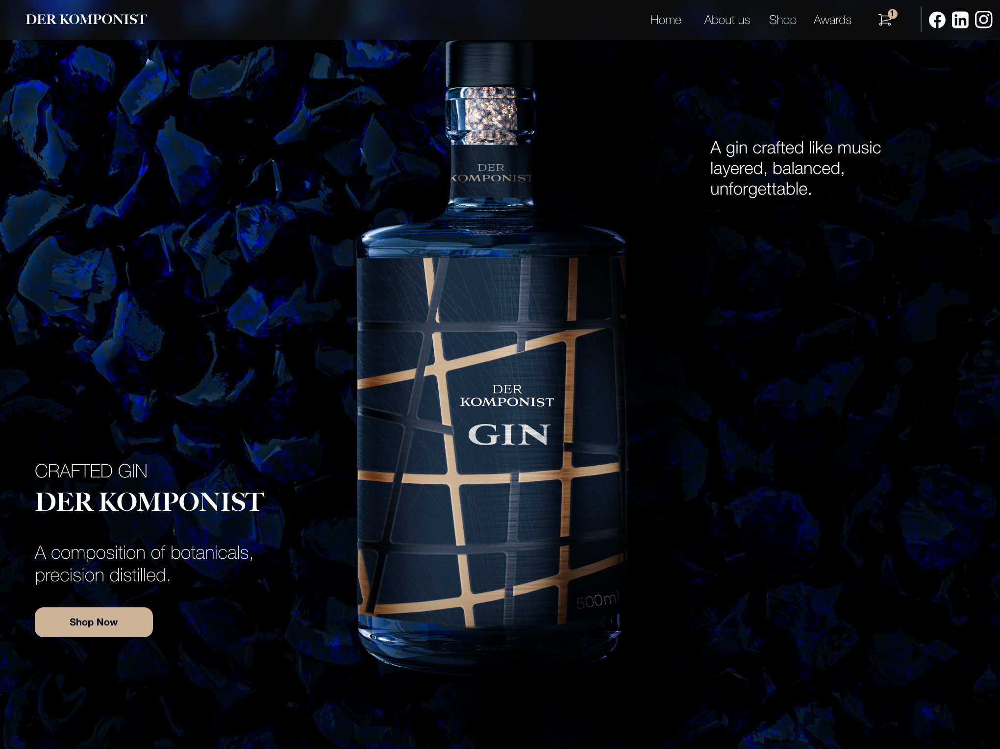

The goal of this project was to redesign a travel app experience in a way that feels modern, polished, and more alive. The client wanted to avoid anything that felt childish or overly playful, and instead focus on a cleaner interface with subtle animation and a stronger sense of how the product would actually work in real use.
I focused the concept around three main screens: the opening screen, the main discovery experience, and the booking screen. Rather than designing too many disconnected views, I kept the flow intentionally tight so each screen had a clear role and the overall journey felt easy to follow.
I built the redesign around clarity, structure, and motion. The visual direction uses strong imagery, clean typography, and simple layout decisions to make the interface feel closer to a contemporary mobile product. Animation was considered as part of the experience so the screens would not only look better, but also feel more natural and interactive.
The final concept presents a more refined and user-friendly travel app that feels easier to navigate and more realistic as a product. By reducing the experience to the most important screens, I was able to create a clearer flow, stronger consistency, and a design that better reflects the style of modern apps.

The intention was to make the experience feel simpler and more premium. Instead of filling the interface with too many features, I focused on the parts that matter most to the user: understanding the product quickly, browsing without confusion, and moving smoothly toward booking.
Each screen was designed to do one job well. The first screen introduces the experience, the main screen supports exploration and decision-making, and the booking screen brings everything together in a way that feels clear and direct.
The result is a cleaner and more structured concept with stronger consistency across the flow. It feels more human, more current, and more believable as a real mobile app experience.

The next stage would be refining the transitions between screens, testing how users move through the flow, and pushing the interaction design further so the concept feels even closer to a finished product.
This project was mainly about restraint — choosing the right screens, simplifying the journey, and making the design feel contemporary without overcomplicating it. The final result communicates the idea more clearly and feels much closer to how a real app should behave.


Tiskly is a web platform concept that lets users upload and preview their designs directly on 3D packaging models before production, making the design-to-print process more visual, intuitive, and error-free.
This project strengthened my ability to design tools that balance creativity and usability. I focused on making complex interactions feel simple, while keeping the experience visually clean and intuitive.


The client approached me with a clear direction — they wanted to reposition their gin as something more masculine, premium, and visually striking. The existing identity felt too neutral and lacked a strong character, especially for a product that should stand out in a saturated market. They were particularly interested in a darker aesthetic, stronger contrasts, and subtle luxury cues like gold accents, while still keeping the product feeling refined rather than overly decorative.
My response focused on building a more distinctive and confident visual identity. I redesigned the bottle label and overall presentation to feel more structured, bold, and intentional. Deep blue tones combined with gold lines create a sense of precision and craftsmanship — almost referencing musical composition, which aligns with the name Der Komponist. Instead of heavy ornamentation, I kept the design controlled and minimal, letting materials, lighting, and composition carry the premium feel.
Strong visual contrast to create presence, minimal but intentional details, a composition that feels balanced and precise, and a product-first layout inspired by high-end brands — everything cohesive across touchpoints.
A more defined and recognizable product identity. The bottle feels more premium, more confident, and visually aligned with the intended audience — standing out in both physical and digital contexts.
The full visual — modeling, materials, and lighting — was built by me. Move your cursor over the image to scan the 3D model beneath the final render.
Modepack is a B2B sales analytics platform designed to centralise performance data and make it immediately actionable. The dashboard gives sales teams a single, focused view of their most critical metrics — from net revenue to distribution stage progress.
Motion plays a key role in enhancing usability. Micro-interactions provide feedback when users interact with elements. Animated charts help users understand changes over time more intuitively.
Designing a dashboard means making hard decisions about what to show and what to remove. This project pushed me to prioritise ruthlessly — every element had to earn its place.